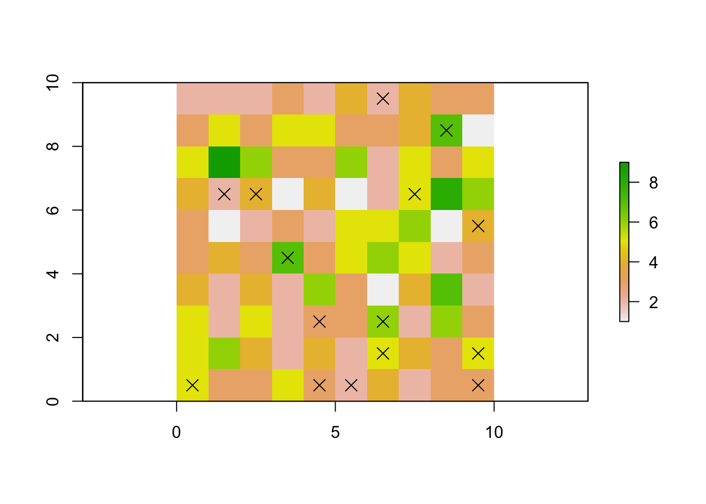
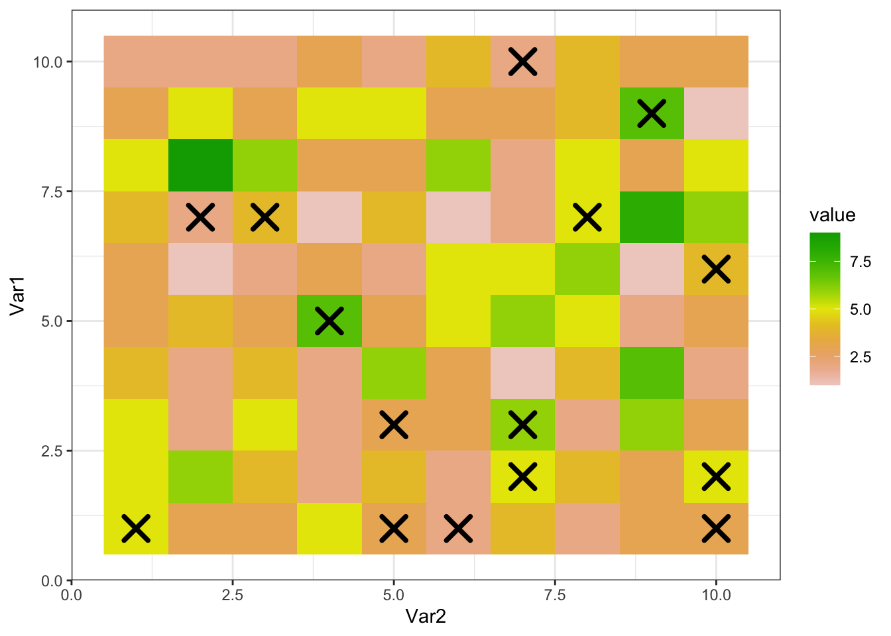
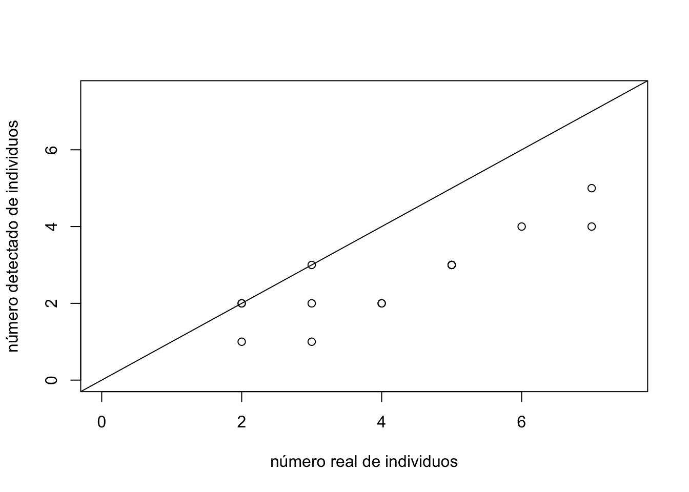
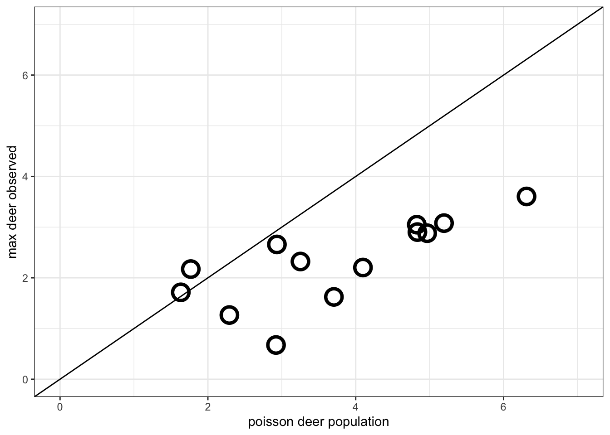

4 Simulation of a population and a sampling WITHOUT covariates
Con ayuda de R, vamos a simular una población de ciervos que se distribuye en un área de 100 km2 (100 cuadrados de 1 km de lado)
With the help of R, we are going to simulate a deer population that is distributed in an area of 100 km2 (100 squares of 1 km on each side)
4.1 the Poisson distribution
set.seed(1) # ajustamos una "semilla"" para controlar la repetibilidad
# Con el paquete "raster" creamos una cuadrícula de 10x10
library(raster)
sarea <- raster(nrows = 10, ncols = 10, xmn = 0, xmx = 10, ymn = 0, ymx = 10)Este área de momento está vacía, por lo que tendremos que “llenarla” de ciervos virtuales (proceso de abundancia, o state process). Podemos utilizar una distribución de Poisson para “esparcir” nuestros ciervos simulados en el área de estudio. Esta distrubución es una de las más comunmente utilizadas en el estudio de abundancias. La distribución de Poisson maneja la frecuencia con la que un evento ocurre en un intervalo específico. Consta de un único parámetro llamado lambda λ que determina el número de eventos que ocurren normalmente en ese intervalo.
This area is currently empty, so we will have to “fill” it with virtual deer (abundance process, or state process). We can use a Poisson distribution to “spread” our simulated deer in the study area. This distribution is one of the most commonly used in the study of abundances. The Poisson distribution handles the frequency with which an event occurs in a specific interval. It consists of a single parameter called lambda λ that determines the number of events that normally occur in that interval.
# generate a random poisson distribution, 10000 values
poissonVector <- rpois(n = 10000, lambda = 4)
# convert the vector into a df
df <- data.frame(poissonCount = poissonVector)
ggplot(data=df, aes(x = poissonCount)) +
geom_histogram(bins = 14, color = "black", fill="white") +
theme_bw() +
labs( x = "poisson value (count)",
y = "occurrences (frequency)",
title = "poisson distribution\nlambda = 4")

4.2 distribute a simulated deer population
En nuestro caso, el intervalo una unidad espacial, una cuadrícula, mientras que el evento será la presencia de un ciervo. El parámetro λ será la “abundancia esperada,” esto es, la abundancia media por cuadrícula. El número y la distribución de los ciervos virtuales que colocaremos en nuestro área de estudio vendrá determinado por una distribución de Poisson con λ=4:
In our case, the interval will be a spatial unit, a grid, while the event will be the presence of a deer. The parameter λ will be the “expected abundance,” that is, the mean abundance per grid. The number and distribution of virtual deer that we will place in our study area will be determined by a Poisson distribution with λ = 4:
\[ N_{i} \sim Poisson(λ) \]
siendo \(N_{i}\) el número total de individuos en la celda i.
Como podemos ver en el histograma de la izquierda, los valores más probables serán 3 o 4 ciervos, aunque variarán entre cero y 14 aproximadamente (aunque este útimo valor será muy poco probable).
where \(N_{i}\) is the total number of individuals in cell i.
As we can see in the histogram on the left, the most probable values will be 3 or 4 deer, although they will vary between zero and 14 approximately (although this last value will be very unlikely).
# Javier's chart: below left
# Seleccionamos el lambda deseado
lambda <- 4
# Generamos 100 números aleatorios obtenidos de una distribucion
# de Poisson con una lambda = 4
sarea[] <- rpois(100, lambda) # Javier's chart: below left
plot(sarea) # ggplot() setup
# extract S4 data and build vector
area.vector <- as.vector(sarea)
# convert to matrix
area.matrix <- matrix(area.vector, byrow=T, nrow=10, ncol=10)
# reverse the rows (so we can compare plots)
area.matrix <- apply(area.matrix,2,rev)
colnames(area.matrix) <- c(1,2,3,4,5,6,7,8,9,10)
rownames(area.matrix) <- c(1,2,3,4,5,6,7,8,9,10)
longData<-melt(area.matrix)
longData<-longData[longData$value!=0,]
#
# have ggplot() use the same colors as does plot()
#
# fine tuning
# remove the first element to shift the
# yellow closer to the middle of the palette
color.vector <- rev(terrain.colors(12))
color.vector <- color.vector[2:length(color.vector)]# ggplot() below right
ggplot(longData, aes(x = Var2, y = Var1)) +
geom_raster(aes(fill=value)) +
scale_fill_gradientn(colors=color.vector) +
theme_bw() 

Si hacemos la suma de todas las celdas de nuestro área de estudio, podremos saber el número total de individuos que hemos simulado (N):
If we do the sum of all the cells in our study area, we will be able to know the total number of individuals that we have simulated (N):
# Calculamos el número total de ciervos virtuales creados (N)
sum(sarea[])## [1] 368Podemos también hacer la media de individuos en cada celda, que debería aproximarse a λ=4:
We can also take the average of individuals in each cell, which should approximate λ = 4:
mean(sarea[])## [1] 3.684.3 Sampling Simulation
A continuación tenemos que simular nuestro muestreo (proceso de detectabilidad o observational process). Éste consistirá en 15 cuadrículas aleatorias de nuestro área de estudio a las cuales realizaremos 4 visitas (ocasiones). Durante los muestreos intentaremos detectar el máximo número posible de ciervos, pero desgraciadamente sabemos que tenemos una eficacia o probabilidad de detección del 40% para todo nuestro área de estudio. Esto significa que, en general, seremos capaces de detectar menos de la mitad de ciervos en cada muestreo. Para simular esta detectabilidad podemos utilizar una distribución binomial. La distribución binomial maneja la probabilidad de éxito para un número de sucesos con dos resultados posibles: éxito o fracaso (cara o cruz, par o impar, etc.). Pongamos que una celda tiene 10 ciervos. La detección de cada uno de esos 10 ciervos puede verse como 10 sucesos en los que puedo tener éxito (detecto al ciervo) o fracasar (el ciervo está, pero no lo detecto). De esta forma, tendríamos que
Next we have to simulate our sampling (detectability process or observational process). This will consist of 15 random grids from our study area to which we will make 4 visits (occasions). During the samplings we will try to detect the maximum possible number of deer, but unfortunately we know that we have an efficiency or probability of detection of 40% for our entire study area. This means that, in general, we will be able to detect less than half the deer in each sample. To simulate this detectability we can use a binomial distribution. The binomial distribution handles the probability of success for a number of events with two possible outcomes: success or failure (heads or tails, even or odd, etc.). Let’s say a cell has 10 deer. Detecting each of those 10 deer can be viewed as 10 events where I can either succeed (detect the deer) or fail (the deer is there, but I don’t detect it). In this way, we have
\[ y_{i,k} \sim binomial(N_{i},p) \]
dónde \(y_{i,k}\) es el número de individuos detectados en la celda i en la visita/ocasión k, \(N_{i}\) es el número de individuos en la celda i y p es la probabilidad de detectar cada ciervo, siendo en nuestro caso p=0.4. Recapitulando, muestrearemos 15 cuadrículas aleatorias durante 4 visitas diferentes. En cada visita tendremos una probabilidad del 40% de ver cada uno de los ciervos que se encuentren en la cuadrícula. El siguiente código simula este proceso:
where \(y_{i,k}\) is the number of individuals detected in cell i on visit / occasion k, \(N_{i}\) is the number of individuals in cell i and p is the probability of detecting each deer, in our case being p = 0.4. Recapping, we will sample 15 random grids during 4 different visits. In each visit we will have a 40% probability of seeing each of the deer that are in the grid. The following code simulates this process:
# Seleccionamos 15 celdas aleatorias de nuestro area de estudio
# (We selected 15 random cells from our study area)
site_ID <- sample(1:100, 15)
dataset <- data.frame(site_ID)
# Vamos a almacenar en número real de individuos de cada celda para poder hacer
# comparaciones posteriormente
# (We are going to store the real number of individuals in each cell to be able
# to make comparisons later)
dataset$trueN <- extract(sarea,site_ID)
# Iniciamos nuestras 4 visitas
dataset$O1 <- NA
dataset$O2 <- NA
dataset$O3 <- NA
dataset$O4 <- NA
# Con un doble bucle, visitarremos 4 veces cada uno de nuestras 15 cuadrículas
# (With a double loop, we will visit each of our 15 grids 4 times)
for (j in 1:4){
for (i in 1:length(site_ID)){
# Nótese que los individuos detectados vienen determinados por una
# binomial con probabilidad 0.4, véase help(rbinom)
# (Note that the detected individuals are determined by a binomial
# with probability 0.4, see help (rbinom))
dataset[i,j+2] <- rbinom(1, extract(sarea,site_ID[i]), 0.4)
}
}(so the model is assuming that each cell has a static micro-population of deer, but the observer does not know that number. rbinom() gives us different counts for each cell for each of the four visits)
4.4 Sampled Cells
Una vez realizado el muestreo, veamos el resultado del mismo. Primero graficamos nuestro área de estudio con las celdas muestreadas:
Once the sampling is done, let’s see the result of it. First we graph our study area with the sampled cells:
# Javier's chart: below left
plot(sarea)
points(xyFromCell(sarea,site_ID), pch = 4, cex = 1.5)# ggplot() rough equivalent: below right
df <- as.data.frame(xyFromCell(sarea,site_ID))
# fine tuning the cell colors.....
# remove the first element to shift the
# yellow closer to the middle of the palette
color.vector <- rev(terrain.colors(12))
color.vector <- color.vector[2:length(color.vector)]
ggplot(longData, aes(x = Var2, y = Var1)) +
geom_raster(aes(fill=value)) +
geom_point(data=df, aes(x,y), position=position_nudge(x = 0.5, y = 0.5),
shape = 4, colour = "black", size = 5, stroke = 2) +
theme_bw() +
#scale_fill_gradientn(colors=rev(terrain.colors(12)))
scale_fill_gradientn(colors=color.vector)

# Ahora, vamos a explorar el resultado de nuestros muestreos en cada una de las visitas:
dataset# make a readable table
library(knitr)
kable(dataset)| site_ID | trueN | O1 | O2 | O3 | O4 |
|---|---|---|---|---|---|
| 19 | 7 | 3 | 4 | 0 | 4 |
| 50 | 4 | 1 | 1 | 2 | 0 |
| 95 | 3 | 1 | 1 | 0 | 2 |
| 77 | 6 | 3 | 3 | 4 | 1 |
| 87 | 5 | 2 | 3 | 2 | 1 |
| 75 | 3 | 0 | 3 | 2 | 3 |
| 91 | 5 | 2 | 2 | 3 | 2 |
| 33 | 4 | 1 | 1 | 2 | 0 |
| 7 | 2 | 1 | 2 | 0 | 0 |
| 38 | 5 | 2 | 3 | 2 | 2 |
| 32 | 2 | 0 | 1 | 0 | 2 |
| 96 | 2 | 1 | 1 | 0 | 0 |
| 54 | 7 | 1 | 5 | 2 | 3 |
| 100 | 3 | 1 | 1 | 0 | 1 |
| 90 | 5 | 2 | 2 | 3 | 2 |
La primera columna (site_ID) es un identificador de la cuadrícula. La segunda (trueN) indica el número real de individuos que se encuentran en cada cuadrícula de nuestro muestreo. Las 4 columnas siguientes (O1,O2… O4) indican el número de ciervos detectados en cada una de nuestras visitas/ocasiones. Como habíamos predicho, al tener un 40% de detectabilidad, casi siempre detectamos menos de la mitad de ciervos de los que realmente hay.
The first column (site_ID) is an identifier for the grid. The second (trueN) indicates the real number of individuals found in each grid of our sampling. The next 4 columns (O1, O2… O4) indicate the number of deer detected in each of our visits / occasions. As we had predicted, with 40% detectability, we almost always detect less than half as many deer as there actually are.
En el mundo real, el problema surge al no conocer esa detectabilidad. Al realizar los distintos muestreos no sabemos realmente cuál es el procentaje de individios que somos capaces de detectar. Una primera estima sería quedarnos con el valor máximo de cada una de nuestras visitas para cada uno de los 15 muestreos. Asumiendo que la población en cada celda es cerrada (sin migración, nacimientos o muerte de individuos) el numero máximo de individuos detectados en cada una de las 4 visitas podría ser un buen punto de partida para aproximar una abundancia total. Lo calculamos y lo comparamos con el número real del siguiente modo:
In the real world, the problem arises from not knowing that detectability. When carrying out the different samplings, we do not really know what percentage of individuals we are capable of detecting. A first estimate would be to keep the maximum value of each of our visits for each of the 15 samplings. Assuming that the population in each cell is closed (without migration, births or death of individuals) the maximum number of individuals detected in each of the 4 visits could be a good starting point to approximate a total abundance. We calculate it and compare it with the real number as follows:
# Calculamos los individuos máximos detectados por visita
dataset$maxN <- apply(dataset[,3:6],1, max)
# Graficamos la relación con los individuos reales
plot(dataset$trueN, dataset$maxN, xlim = c(0,7.5), ylim = c(0,7.5),
xlab = "número real de individuos", ylab = "número detectado de individuos")
abline(0,1)# preserve source dataset
datasetJavi <- dataset# ggplot() version
datsetTidy <- datasetJavi %>%
rowwise %>%
mutate(maxN = max(c(O1, O2, O3, O4)))
ggplot() +
geom_jitter(data=datsetTidy, aes(trueN, maxN),
shape = 1, colour = "black", size = 5, stroke = 2) +
geom_abline() +
xlim(0,7) +
ylim(0,7) +
theme_bw() +
labs( x = "poisson deer population",
y = "max deer observed")

note, for the ggplot() version on the right, the points are “jittered” to expose overlapping data. Default jittering can cause some points to be drawn above the abline() line (suggesting an impossible result, that is, a trial count maximum greater than the poisson cell population).
Como veníamos intuyendo, infraestimamos el número real de ciervos. De hecho, como sabemos que tenemos un 40% de eficacia de detección, podríamos adelantar que, de media, seguramente estaremos detectando aproximadamente un 40% de ciervos de los que hay en realidad. Vamos a comprobarlo:
As we had been intuiting, we underestimated the real number of deer. In fact, as we know that we have a 40% detection efficiency, we could anticipate that, on average, we will surely be detecting approximately 40% of the deer that there are in reality. Let’s check it out:
# Calculamos la media de individuos vistos en las 4 visitas
dataset$meanN <- apply(dataset[,3:6],1, mean)
#Sumamos las medias de los 15 sitios y lo comparamos con los valores reales
sum(dataset$meanN) / sum(dataset$trueN)## [1] 0.3928571Efectivamente, de media estamos viendo un 39% de los individuos que realmente hay. Para poder ajustar un modelo que fuese capaz de calcular el número total de individuos, deberíamos primero ser capaces de calcular esa detectabilidad, esto es, el parámetro p de la distribución binomial.
Indeed, on average we are seeing 39% of the individuals that there really are. In order to fit a model that is capable of calculating the total number of individuals, we should first be able to calculate that detectability, that is, the parameter p of the binomial distribution.